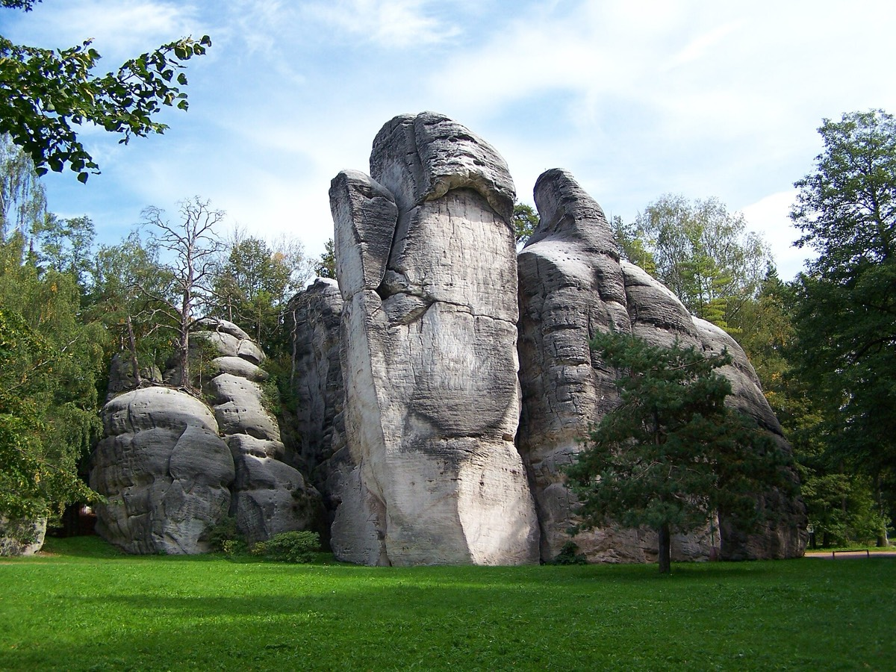
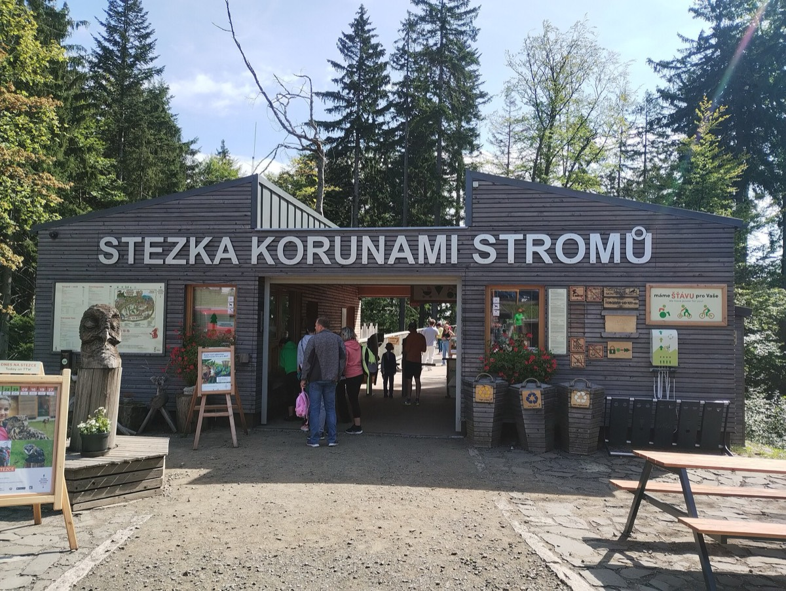
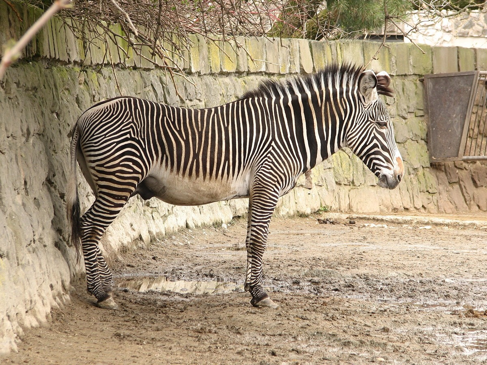
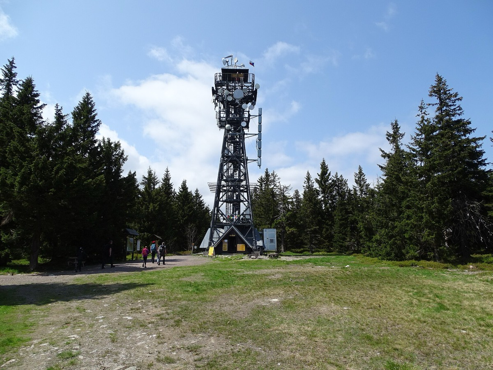
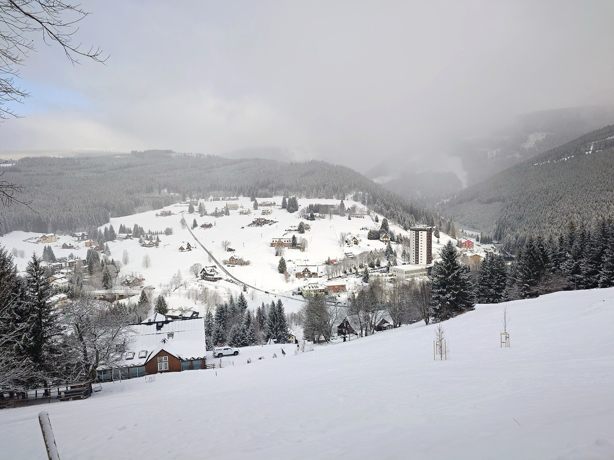
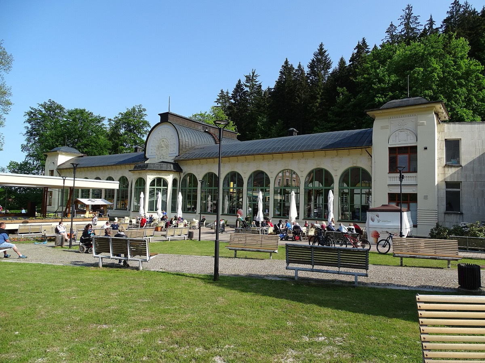
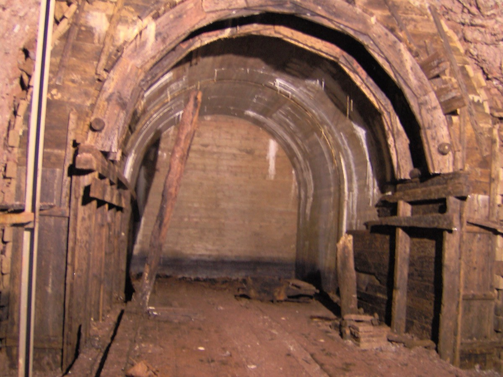
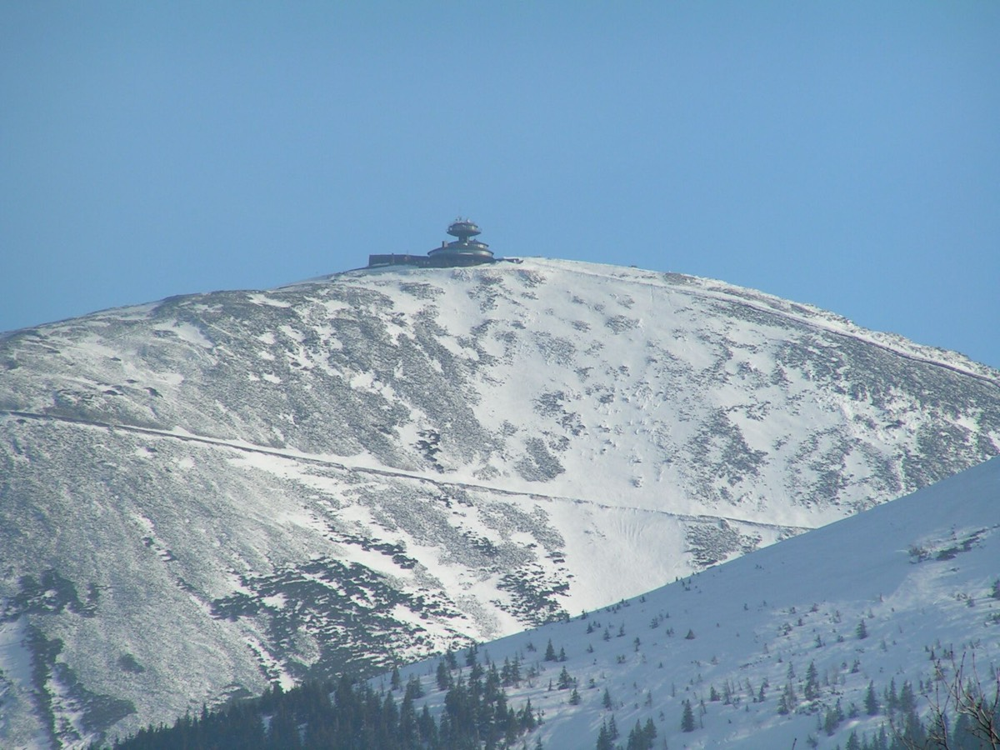
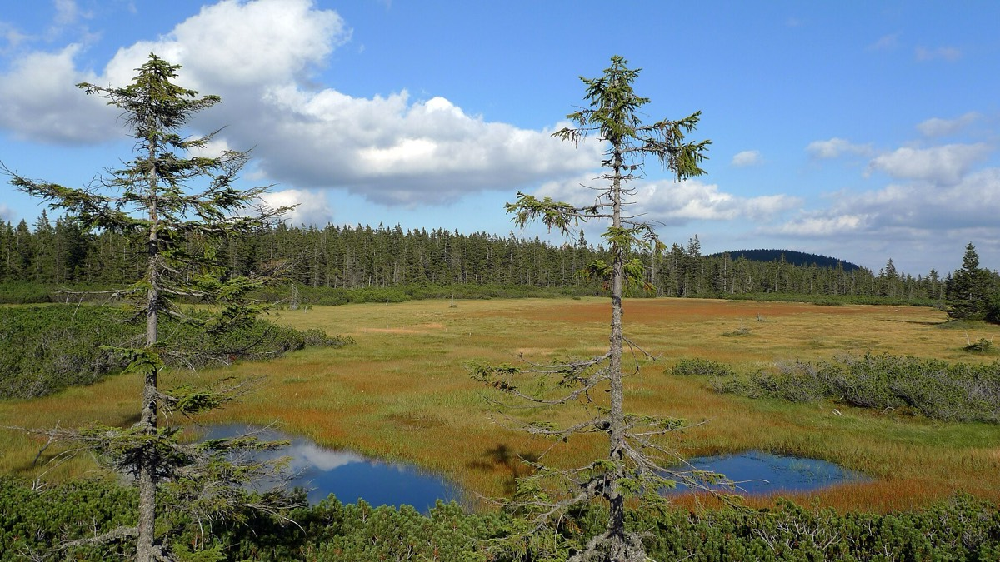
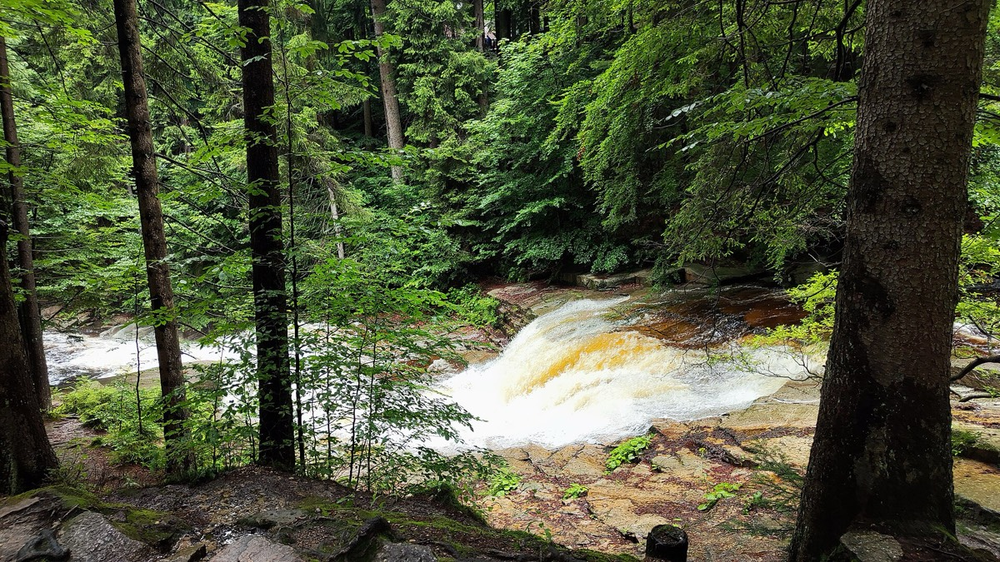

Sněžka (1603 m)
Nejvyšší hora Česka na dosah. Vyjeďte kabinovou lanovkou z Pece na vrchol za čtvrt hodiny, nebo si vyšlápněte hřebeny — nahoře stojíte jednou nohou v Česku a druhou v Polsku, s výhledem přes celé Krkonoše.
snezkalanovka.czOd procházek pěšky od brány po celodenní výpravy autem. Vybrali jsme nejlepší cíle na každou sezónu — přepínačem přepnete mezi létem a zimou.
Devět tipů, které stojí za výlet — od procházky pěšky od brány po celodenní výpravy.
Nejvyšší hora Česka na dosah. Vyjeďte kabinovou lanovkou z Pece na vrchol za čtvrt hodiny, nebo si vyšlápněte hřebeny — nahoře stojíte jednou nohou v Česku a druhou v Polsku, s výhledem přes celé Krkonoše.
snezkalanovka.cz
Největší pískovcové skalní město ve střední Evropě — bludiště věží a soutěsek, dva vodopády a jezírko s vyhlídkovými pramicemi. Výlet na půl dne; v sezóně si vstup i parkování rezervujte online předem.
adrspasskeskaly.cz
Klasika, na kterou dojdete pěšky lesem: kolonáda v Janských Lázních a pak Stezka korunami stromů s 43metrovou věží, tobogánem dolů a Medvědí stezkou. U paty čeká Emilův lesní svět s prolézačkami a minifarmou.
treetop-walks.com
Africky laděná zoo, kterou projedete safaribusem přímo mezi volně žijícími zvířaty. Areál je rozlehlý — vyrazte hned na otevření. V létě láká i večerní safari za soumraku (nutná rezervace).
safaripark.cz
Osmimístná kabinková lanovka vyveze celou rodinu (i s kočárkem) na vrchol Černé hory. Nahoře je zábavní Park Kabinka se sedmi atrakcemi a rozhledna Panorama — vstup do parku je v ceně jízdenky.
skiresort.cz
900 metrů nerezové bobové dráhy a dvojsedačky až 40 km/h — adrenalin, který funguje za každého počasí. Od osmi let mohou děti jet samy.
relaxpark.cz
Krytý bazén z minerálních pramenů vyhřátý na 27 °C, vířivky, protiproud a saunový svět — hned za kolonádou v Janských Lázních, kam dojdete pěšky. Ideální program na den, kdy nepřeje počasí.
janskelazne.com
Největší dělostřelecká pevnost v Česku. Sestupte 52 metrů pod zem do 3,5 km chodeb, kde je celoročně chladných 8 °C. V areálu je i rozhledna Eliška a dětské hřiště.
stachelberg.cz
Velký hotelový aquapark hned za polskou hranicí: vlny, skluzavky, osm vířivek a solná i ledová jeskyně. Na cestu do Polska si vezměte doklady i pro děti.
golebiewski.plLyžování za rohem, teplé bazény po lyžích a výlety, které dají smysl i pod sněhem.
Největší lyžařský areál Krkonoš (SkiResort Černá hora–Pec) máte prakticky za rohem. Skibus staví 200 metrů od brány a jezdí zdarma — k vlekům se dostanete bez auta a bez hledání parkování.
skiresort.czKdyž si nohy řeknou o teplo, dojdete pěšky do lázeňského Aquacentra: bazén z minerálních pramenů na 27 °C, vířivky a saunový svět. Nejlepší konec lyžařského dne.
janskelazne.comZasněžený vrchol nejvyšší hory Česka. Kabinová lanovka z Pece vás vyveze nad hřebeny do zimní scenérie — nahoru se jede jen za příznivého počasí, tak sledujte předpověď.
snezkalanovka.cz
Vyvezte se lanovkou na náhorní plošinu Černé hory, kde vede po dřevěných chodníčcích okruh přes prastaré rašeliniště — v zimě klidná bílá krajina a oblíbený terén pro běžky.
krkonose.euZa sychravého dne se hodí velký krytý aquapark hned za polskou hranicí: vlny, skluzavky, osm vířivek a solná i ledová jeskyně. Vezměte doklady i dětem.
golebiewski.pl
Nejstarší fungující sklárna v Čechách — 45minutová prohlídka tavení a foukání skla v příjemném teple. Kousek dál se dá zajít k zamrzajícím Mumlavským vodopádům.
sklarnaharrachov.czCelý dům i pozemek jen pro vaši skupinu 6–22 lidí — a všechny tyhle výlety kousek za bránou.